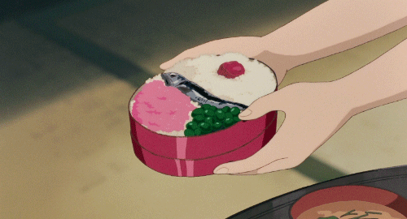

My Neighbor Totoro Bento Box

Description
Satsuki’s bento from Totoro is a perfect example of a cute and healthy typical bento. A lot of these ingredients are common in Japan.
Ingredients
- 1 cup cooked white rice
- 1 umeboshi
- 1 shishamo
- 1 tbsp oil
- handful frozen edamame
- 1 tbsp sakura denbu
Instructions
- Put cooked rice in your bento box about 3/4 of the way full.
- Take 1 umeboshi and put it on one side of the rice.
- In a small pan, heat the oil on medium-high.
- Cook one shishamo on both sides until cooked.
- Place the cooked shishamo across the middle of the bento box on the rice.
- Boil water in a small pot.
- Put in a handful of frozen edamame and cook according to package instructions.
- Once cooked, pop the edamame beans out of the pod.
- Arrange them on the rice to fill up a little less than one quarter of the bento box, under the shishamo.
- Sprinkle the sakura denbu on the rice next to the edamame.
- Enjoy!
Home